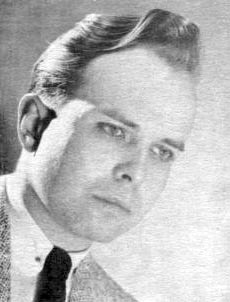

Williamson naît le à Chicago, dans le comté de Cook (Illinois), fils de George et Bernice (Hunt) Williamson. Il fait des études jusqu'en
, où ses résultats ne lui permettent pas de poursuivre ses études dans l'Université d'Arizona.
Ne souhaitant pas se réinscrire, il préfère partir un moment à Noblesville (Indiana), où
il est rédacteur à Valor, je journal de l'organisation Soulcraft de William Dudley Pelley. Ce
dernier, faciste et raciste, sortant de 8 ans de prison pour opposition à Franklin Delano Roosevelt
lors de la guerre, est également féru d'occulte (il compile 32 volumes d'écriture automatique issue de contact avec
des intelligences supérieures) et est également en contact avec George Adamski, via
leur adhésion mutuelle au culte I AM de Guy Ballard. Il est probable que, de fil en aiguille, Pelly ait
présenté Williamson à Adamski.
Le , Adamski aurait installé son télescope dans un endroit favorable au passage des
soucoupes volantes, au centre du désert de Californie et aurait attendu, avec 6 autres personnes : Williamson et
sa femme Betty, une connaissance nommée Al Bailey et sa femme, Lucy McGiness (secrétaire d'Adamski), et Alice K.
Wells, propriétaire du Palomar Gardens Cafe.
En 1952, il déclare avoir établi un contact sur ondes courtes avec des ovnis, et observé des ovnis au-dessus de son
lieu d'émission.
Dans ses livres, Williamson reprend les thêmes de 2 camps opposés d'ET, avec les bons (les moissonneurs) et
les mauvais (les intrus). Selon lui tous les terriens sont des êtres de l'espace dont les ancêtres viennent
ici en tant que fils de Dieu. Pour lui l'humanité passe par une période de turbulence planétaire menant à une
nouvelle conscience et l'aube d'une nouvelle ère dorée. De plus, un gouvernement mondial caché (les familles
banquière internationales) controllées par les ET négatifs maintiendraient la vérité cachée, gardant les gens
nés sur Terre ignorant de leur leur origines réelles. Williamson cite aussi la Bible pour identifier les ET
"maléfiques".

A la fin des années 1950s, Williamson cesse d'être actif dans le milieu des ovnis et fonde un monastère dans les
montagnes des Andes. Il y reste quelques années puis retourne à Santa Barbara (Californie),
où il est ordonné dans l'Eglise Nestorienne.
En , lors d'une expédition au Pérou, Williamson disparaît.
Williamson meurt en à Long Beach (Californie).
Certains Vallée,
J.: Messengers
of deception: UFO contacts and
cults, Ronin Publishing, juin 1979 ont indiqué que son véritable nom serait Michel d'Obrenovic,
apparemment à tort (le nom de d'Obrenovic aurait disparu de Yougoslavie après 1903). Williamson aurait utilisé ce
titre en une occasion en lorsqu'il assistait à un mariage, se posant comme H.R.H. Prince Michael
d'Obrenovic van Lazar, Duc de Sumadya.
Auteur de :
Hunt-Williamson, G.: Le Secret des Andes - Où Williamson suspecte les ancients sites indiens aux Andes
d'être des bases secrètes de soucoupes.
Hunt-Williamson, G. & McCoy, John: UFOs
Confidential - The meaning behind the most closely guarded secret of all time, Corpus Christi, TX :
Essene Press, 1958 - Un des premiers livres à parler d'un supposé empire caché de banquiers
internationaux empêchant la révélation de la vérité sur les ovnis et les civilisations ET.
Hunt-Williamson, G.: Captain, 1954 - Dans lequel Williamson déclare que les derniers mots de Mantell étaient : Il y a des fenêtres et je
peux voir des gens dedans ! (4)
Hunt-Williamson, G.: The saucers speak ! 1954; Los Angeles, 1959 ; Londres 1963 - Ce rapport documentaire sur la communication avec un
vaisseau spatial dans l'atmosphère de la Terre couvre la période du 1952-08-02 jusqu'à l'époque de la rédaction. Une
communication a aussi été établie avec plusieurs planètes dans notre propre système solaire et avec un vaisseau
spatial dans notre atmosphère venant autres systèmes solaires. Pour la plupart... des messages ont été reçus en Code
Morse International par radiotélégraphie. Il y eut un cas où la radiotélégraphie fut employée par les intelligences
du vaisseau spatial.
Hunt-Williamson, G.: Secret places of the lion - Alien influences on Earth's destiny, ISBN 0-89281-6015.
Traduit Les gîtes secrets du lion, J'ai Lu 1958/1972.
Hunt-Williamson, G.: Road in the sky, 1975 - Sur les visites extraterrestres sur Terre. Pour
l'anecdote Williamson y décrit le jeune Michael Wolf transmettant des
messages aux intelligences de l'espace en utilisant des rayons de lumière modulés p. 150.